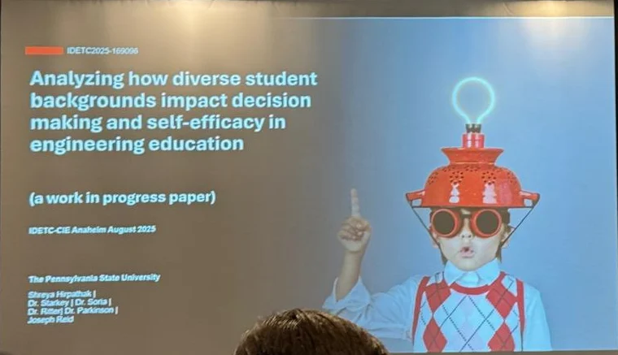
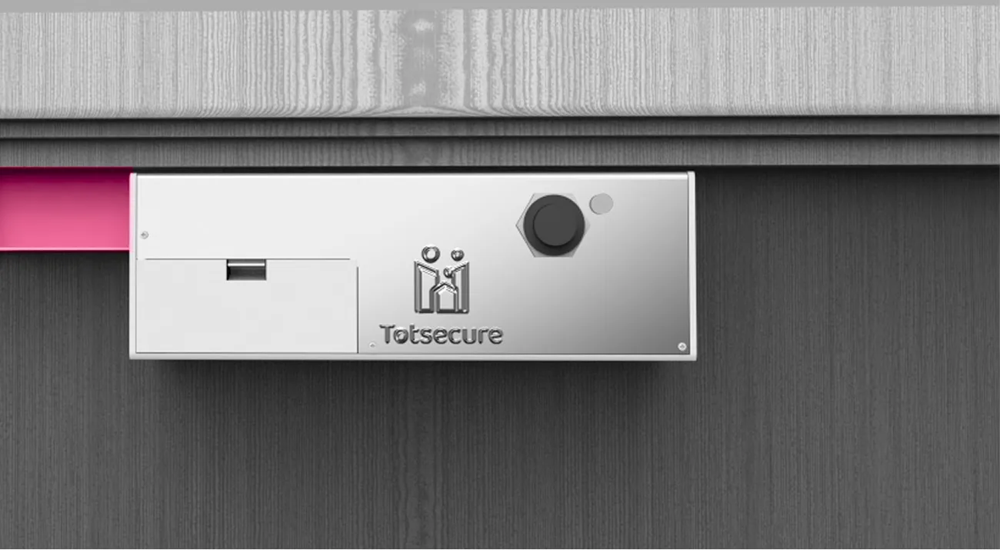
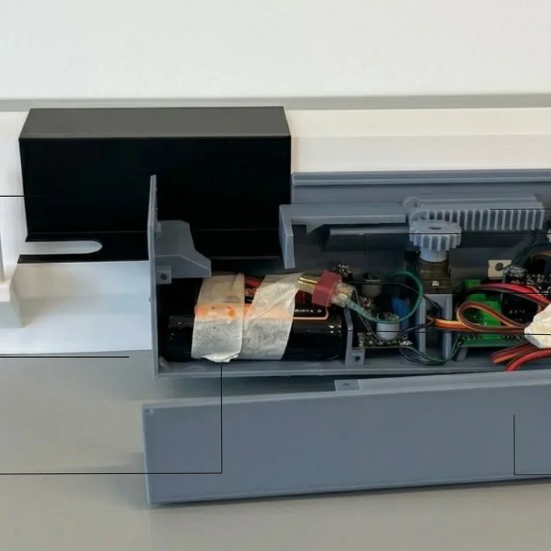
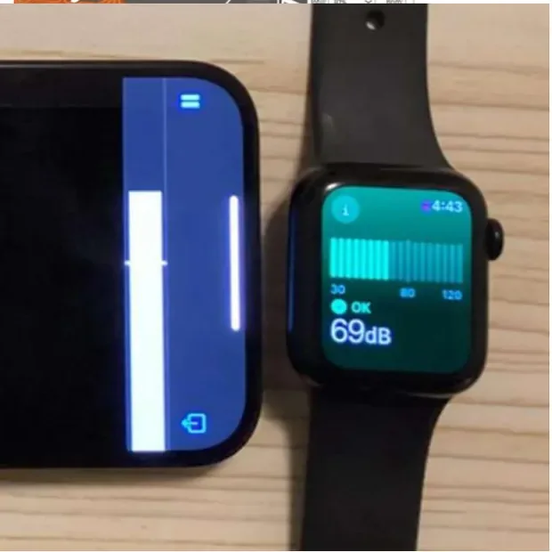

UX Researcher & Engineering Designer. Professional question-asker.

Field note 01Whiteboards are where hunches turn into hypotheses. (It's usually Option 3.)
Field note 02This watch doubled as my decibel meter for the lattice acoustics experiment.
Field note 03Where 1,910 student survey responses got cleaned, coded and questioned.
I find out how people actually use things, then design what they needed all along.
Hospital wards, pharma labs, family homes, university makerspaces. I bring an engineering designer's hands to a researcher's curiosity, so my insights end up as working products, not slide decks.
first-year engineering students surveyed for my thesis research
item Makerspace Self-Efficacy Scale I developed and validated as lead author
place Best Paper, ASME IDETC-CIE 2026
engineering students taught design, prototyping & CAD as a TA
Work.
Four studies, each opening with its impact and the methods behind it. First up: my M.S. thesis.

How students' backgrounds affect makerspaces
As lead author, I built the Makerspace Self-Efficacy Scale (MSES), a new, validated scale for how capable engineering students feel at every stage of making, then used it to show where students' backgrounds shape that confidence.
Try the method
3 questions · 10 secHow confident are you that you could…
…come up with an idea for something to build?
…make a first prototype with a 3D printer or laser cutter?
…fix it when the prototype fails?
-
01
How students' backgrounds affect makerspacesMakerspace Self-Efficacy Scale (MSES) · thesis
My thesis: a validated 17-item self-efficacy scale built on 1,910 surveyed students. 2nd place Best Paper at IDETC-CIE 2026.
94%items validated by CFA2024–26

-
02
Innovation vs habitwhat does a moved button cost users?
A study design measuring the cognitive load of everyday UI changes: 5 real app tasks, two interface versions, NASA-TLX and time on task.
5tasks · 2 UI versions2025

-
03
Totsecurea child lock parents control remotely
Parent survey data and a persona-driven brief shaped a lock adults can open in a second and toddlers can't, controlled from an app.
55%preventable injuries targeted2025

-
04
Can lattices make products quieter?a controlled acoustics experiment
One question, one control, six 3D-printed lattices, 18 readings. Closed, complex cells cut transmitted sound by up to 11.4 dB; one design made it louder.
−11.4 dBbest lattice vs control2025

Research, presented.
Three talks, one thesis: the Makerspace Self-Efficacy Scale.
Best Paper, IDETC-CIE ’26
For the Makerspace Self-Efficacy Scale. Nominated for ASME's special edition journal.

IDETC-CIE ’25 talk
How students' backgrounds shape confidence in makerspaces.

CERS ’26 symposium
Building a self-efficacy scale, through a UX research lens.
Where I've learned by doing.
From Pune to Penn State.
← Scroll or drag the timeline →
2024 – 2026M.S., Engineering Design InnovationThe Pennsylvania State University
- Thesis research on makerspace self-efficacy (MSES).
- Two ASME IDETC-CIE papers; CERS 2026 presenter.
2020 – 2024B.Des., Industrial DesignMIT Institute of Design, Pune
- Capstone at Therefore Design (Calidus, for LabIndia).
- Featured on Packaging of the World (Feb 2023) for “Gingko” sushi take-away packaging.
Nov 2024 – nowGraduate Student ResearcherThe Pennsylvania State University
- Designed and ran a two-round survey of 1,910 first-year engineering students.
- Validated 16 of 17 items (94%) with confirmatory factor analysis; used IRT to isolate 2 background factors.
- Lead author of the 17-item Makerspace Self-Efficacy Scale (MSES): 2nd place Best Paper at ASME IDETC-CIE 2026, nominated for ASME's special edition journal.
Aug 2024 – nowTeaching Assistant, EDSGN 100The Pennsylvania State University
- Taught design process, prototyping and CAD (Fusion 360, SolidWorks) across 13 sections over 6 semesters.
- ~520+ first-year engineering students; lectures, office hours and project mentoring.
Jan – Jun 2024Product & Industrial Design InternTherefore Design, Pune
- B.Des capstone: redesigned the “Calidus” stability chamber for LabIndia.
- On-site interviews with factory workers and repair technicians; benchmarked 10+ products.
- Cut assembly from 15 steps to 5 (67%); 970 mm footprint vs ~1,300 mm; redesigned a 6-screen HMI.
May – Jun 2023Product Design InternGodrej & Boyce · Interio Seating
- Benchmarked 17 gaming chairs across 7 brands.
- Survey of 90 respondents plus 10 interviews: 93.6% had no gaming chair.
- Synthesised 4 personas and 3 design briefs across ₹8,000–₹25,000 tiers.
Aug – Sep 2022Product Design InternGuddee (startup)
- Designed products that bring traditional Indian artisan crafts into contemporary daily life.
Jun – Jul 2022Packaging Design InternChef at Home (startup)
- Designed launch packaging for “Zangbox”, cook-it-yourself meal kits curated with five-star hotel chefs.
Curiosity, with a method.
Don't read about my process. Run a tiny study with it: four moves, about a minute.
Watch before asking.
Tap the students in this makerspace to hear what they'd tell you. 0 / 6 heard
Illustrative quotes, in the spirit of what the MSES measures
Patterns, not anecdotes.
Pick a note, then drop it in the theme it belongs to. 0 / 6 sorted
Insight: background shapes confidence before anyone touches a tool, so the fix is onboarding and access, not just more machines.
Prototype rough, test early.
Press and hold to build Totsecure, from sketch to working lock.


Let data settle it.
Play a tone through the enclosure and read the meter. Three trials each. 0 / 3 trials
What my research taught me.
Real findings from my projects. Drag them, then hit Cluster.
Hi, I'm Shreya.
शfirst letter of my first name, in my mother tongue
Hfirst letter of my last name, in English



Click to shuffle · drag the stickers
“Ever since childhood, stories have held me in their grip. My storytelling grew from daydreaming into writing, dance and doodling, and eventually into prototypes, designs and research.”
I trained as an industrial designer (B.Des, MIT Institute of Design, Pune) and spent five internships making products, the kind that end up in usability reports. That's why I moved toward research.
Now I'm finishing an M.S. in Engineering Design at Penn State ('26), studying how people's backgrounds shape their confidence and decisions. I've taught 520+ first-year engineers to prototype and presented at ASME IDETC-CIE twice.
Off the clock: Bharatanatyam (arangetram and Visharad) and photography. Shuffle the stack to see them.
Looking for UX Researcher / UX Designer roles where research and making sit at the same table.
Research
- Survey & scale design
- Interviews & contextual inquiry
- CFA · item response theory
- Task & journey analysis
- Personas & design briefs
- Competitive benchmarking
Design
- Figma · Framer
- Interaction & HMI design
- Rhino · Fusion 360
- KeyShot · Blender
- Photoshop · Illustrator
- Tableau
Also
- Prototyping & 3D printing
- ESP32 electronics
- English · Hindi · Marathi
- German (basic)
What's on your mind?
Let's discuss design, books, opportunities and conspiracy theories.